Draft Report on the International Conference on Biotechnology
Organized by CARES, May 25-26, 2013 at The Westin, Dhaka
Executive Summary
A. The two-day event held on 25-26, 2013 at the Westin Dhaka was participated by over 250 scientists, researchers, academia, business-industry leaders, Founding and Primary members of CARES and interested students. Most public and some private universities were represented. Collaboration of the Bangladesh Academy of Sciences, the BCSIR, the Bangladesh Agricultural University and a NRB organization-American Society of Bangladesh-affiliated Microbiologists (ASBM) had made the event a most representative of the national scientific community with the highest international participation. The participation of the President of Metropolitan Chamber of Commerce and Industries (MCCI) and a number of leading industrialists of the country had added an integrative character to the event.
B. A number of eminent persons from home and abroad presented papers and one made presentation through Skype video link. Over 70 abstracts of scientific research were received through "Call for Abstracts", 67 of which were published in a souvenir volume. Of these 67 abstracts, the Scientific Committee selected 28 for oral presentation and 38 were approved for poster presentation. State and advances of some important research were shared with the participants.
C. The following points emerged from the participants who spoke in the Conference:
- Biotechnology is a multidisciplinary subject of tremendous potential for the development of food, medicine and horticultural crops: fruits, orchids, flora etc.
- Many including the Government recognized the potential of Biotechnology in contributing economic growth in an environmentally safe manner. Our neighboring countries have taken the advantages of this technology in a wide variety of areas, including crop management, forestry, bio-pesticides, and bio-fertilizers. We need to catch up, and not lag behind.
- Private sector and potential entrepreneurs have important role to play. They are looking forward to scientifically trained manpower resources and appropriate technology.
- Biotechnology, an interdisciplinary science, holds enormous prospect of individual career development as well as institutional collaboration within the region and beyond.
- Government as well as the private sectors have enormous scope and responsibilities to help develop biotechnology research and industrial entrepreneurial collaboration.
- The conference ended with recommendations which CARES was expecting to emerge. It supported CARES vision to promote and support basic, applied and prototype research of immediate economic value in the fields of agriculture, life sciences, small and medium agro-enterprises, green technology and rural enterprises. Those present agreed that applications of Biotechnology, if made sustainable and affordable, holds the key for changing livelihood of our farmers and for shaping an inclusive society in Bangladesh.
D. CARES may now get involved in some follow-up as suggested below:
- Liaise with the government Ministries for providing incentives and recognition to scientists involved in biotechnology research
- Work with Bangladesh Agricultural University to establish Bio-tech Park with incubation facilities,
- Follow-up with Governor of Bangladesh Bank to encourage the banking institutions to provide soft loan for setting up biotechnology-led industries.
Report of the CARES International Conference on Biotechnology
1. Introduction:
The long awaited CARES International Conference on Biotechnology (ICB), which was also to be the formal launching of CARES, is now happily over. The two-day event held on 25-26, 2013 at the Westin Dhaka was participated by over 250 scientists, researchers, academia, business-industry leaders, Founding and Primary members of CARES and interested students. Most public and some private universities were represented. Collaboration of the Bangladesh Academy of Sciences, the BCSIR, the Bangladesh Agricultural University and a NRB organization-American Society of Bangladesh-affiliated Microbiologists (ASBM) had made the event a most representative of the national scientific community with the highest international participation. It would not be an exaggerated claim with the conclusion of the ICB, CARES is now a well-known entity among the scientific and academic circles of Bangladesh.
The idea of hosting an international conference on Biotechnology had been on the agenda of CARES for a fairly long time. CARES Chairman and some distinguished members of the organization had discussed in various meetings and caucuses during the past one year as to how such a conference would meet the CARES objectives. They had agreed the following to be conference objectives: (1) inventory of Biotechnology in the country, (2) identification of priority areas, (3) current research capability, and (4) policy recommendations for the government. The conference will be formal launching of CARES as well. We therefore need to have an in-depth look at the organization aspects of the ICB, the actual event and what was achieved from it.
2. Conference Date and venue:
Initially, CARES was considering first week of January, 2013 to be the time of the conference. But various considerations had caused CARES to reconsider and shift the date to 25-26 May, 2013. While the date did not pose any difficulty of Bangladesh academia to participate, we received the feedback that some NRB academics from North-America would still be involved with end-session commitments and would have preferred a date in June. Selection of the Westin Hotel, Dhaka suited the need to have a secure venue, taking into consideration hartals and associated difficulties. The concluding session still saw hartal and some resultant reduced turnover of participants. Nevertheless, there was good number of participation in both the days and the selection of the venue proved to be fully worth in terms of dividends.
3. Preparation for the conference:
Actual preparatory work began with a Call Meeting of the CARES EC held on September 24, 2012 that formed a relevant committee for the conference. With some early difficulties and setbacks with preparatory work, full swing preparation started from January, 2013. On January 26, 2013 the Executive Committee in its 5th meeting set up one Organizing Committee, a Core Committee and three subcommittees-Finance, Conference and Scientific- tasking them to prepare for the Conference in May. Given the rather short preparation time, the task was certainly challenging: to come up with a good conference of international stature with just four months of actual preparation!
The Core Committee had been the actual group that took the onus and delivered. The Finance Committee never met, the Scientific Committee had its first meeting on 13 April and the Organizing Committee had its only meeting two days before the actual event! This has to be put in record so that future events of CARES are undertaken avoiding these types of predicaments. Therefore, the success for preparation and execution of the two-day event are to be largely credited to the Core Committee who were supported and encouraged by some dedicated EC and Founding members who took the trouble of physically being present in several meetings even at late hours and on holidays.
4. Participants and the numbers:
Policy makers, Scientists, Academics and Bio-technology researchers from Universities, research institutions, pharmacy-industries and interested persons from the private sectors were invited. NRBs and guests from South Asian and ASEAN were to be contacted and invited. There was good participation from the University of Dhaka and the Bangladesh Agricultural University, and Jahangirnagar University, Shahjalal University of Science and Technology, Bangabandhu Agriculture University and representational participation from institutions like the BAS, BCSIR, ICDDR, B, and BRRI. BINA and NIB. Some leading pharmaceutical companies and conglomerates with interest in agro-business had also sent their representatives.
A prominent Microbiologist from the USA, Professor Rita Colwell was contacted and invited to present a 'keynote address'. She accepted the invitation and travelled under own arrangement. However, she was provided local hospitality at the highest level.
CARES organizers had initially expected: (1) about 100 participants to attend the opening session, (2) about 50 to attend the pre-lunch sessions and (3) some 40 to attend throughout the conference. The actual turn out over 280 in the opening session, around 200 in the pre-lunch session, nearly 130 during all the sessions and around 190 in the closing session!
CARES had discussed for local hospitality for up to 15 foreign guests, air-tickets for some for SAARC and ASEAN travel sectors. Due to some last moment cancellations on health and other reasons, local hospitality was provided to 8 foreign guests, 5 from India, 2 from Sri Lanka, 1 from Nepal and Dr. Rita Colwell from the USA. Travel support was given in the form of ticket/ticket reimbursement to all above but Professor Rita Colwell. The presence of Sri Lankan Senior Minister for Scientific Affairs Dr. Tissa Vitarana, 5 prominent scientists/academics from India, NRBs from USA and Singapore and of Professor Colwell had certainly given the ICB a true international dimension and importance.
A number of eminent persons presented papers and one presenting paper through Skype video link. Over 70 abstracts of scientific research were received through "Call for Abstracts", 67 of which were published in a souvenir volume. Of these 67 abstracts, the Scientific Committee selected 28 for oral presentation and 38 were approved for poster presentation. The posters were prepared in vivid colors and added value to the Conference; 3 presentations were selected and authors awarded prize, causing much to the enthusiasm to young scientists.
(List of international participants is at Annexure)
5. Funding:
An initial budgetary projection was made that the Conference could cost about Tk. 100 lakhs and that the CARES could fund about Tk. 12 lakhs, considering the CARES budget of Tk. 33 Lakhs for funding research, studies and projects. Following failure of fund raising efforts on part of the Finance Committee, the conference budget was scaled down to Tk. 54 lakhs estimate, Tk. 28 lakhs set aside from CARES budget. The Dutch-Bangla Bank Limited contributed Tk. 10 lakhs to become 'Platinum Partner' of the event, and Mr. Wali-ur-Maroof Matin, the Convener of the Finance Committee contributed Tk. 1 lakh.
The Conference was organized with a final cost in the neighborhood of Tk. 35 lakhs. It was quite a feat to keep the final expenses at this level, given that scale of scheme undertaken and actualized. The major savings were on cost of international travel, local hospitalities including field trips and sightseeing in the country which could not be organized due to prevailing situation and by curtailing the program from a planned full two-day event to one and a half day program. The Asia Pacific Hotel provided a very special rate where most of the international guests were accommodated.
6. Theme of the conference and selected topics:
After intense consideration by and consultations between CARES members, the chosen Conference theme was: Application of Biotechnology in Addressing the Development Needs of Bangladesh,
Topics for scientific sessions as announced in the two Conference Announcements and circulated:
Agriculture
- Plant Genetic Resources: Protection and Management.
- Assuring Food Security for the Growing Population: Targeting Yield.
- Agriculture: Coping with the Changing Environment-Climate Change and Global Warming.
Horticulture
- Biotechnological applications in horticulture
- Year-round and off-season production
- Development of cost-effective high-tech production technologies, particularly for high-value horticultural crops
Fisheries
- Increasing output for a growing population
- Staying competitive in the export market
- Sustainable fisheries management using biotechnology
Animal and Poultry
- Animal vaccines
- Control of infectious diseases
- Biotechnology applications in increase of milk and meat production
- Avian flu
Medical/Pharmaceutical
- Infectious Diseases and Vaccines: Dealing with New Strains and Drug-resistant Strains.
- Promise of Bio-informatics in Pharmaceutics and Diagnostics.
- Intellectual Property Rights and Bio-safety.
- Taking the Country Forward Using Industrial Biotechnology.
- Prospects for Developing Biotechnology Industry in Bangladesh.
Nutrition and Food Sciences
- Addressing food safety (pesticide residues, microbiological, ripening and preservative chemicals)
- Contribution of fruits and vegetables in human nutrition
- Agriculture, food sciences and nutrition: understanding and underscoring the intricate link
Environmental
- Meeting the climate changes with biotechnology
- Future of biopesticide and biofertilizer in Bangladesh
- Management of industrial, animal and poultry waste using biotechnology
Economic Resources and Economic Impact of Research in Life Sciences
- How investing in research could boost Bangladesh's economy
- Could science in Bangladesh assist GDP to achieve double-digit growth?
7. Highlights of two day-wise program:
May 25, 2013
Opening Session:
Professor M. Shamsher Ali, Vice Chairman of CARES, chaired the opening session and welcomed all participants. 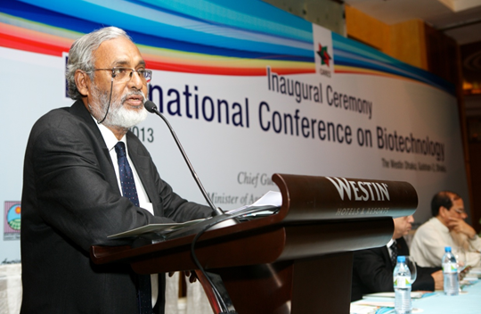 Inviting young scientists to devote to pure and applied science, Professor Ali recounted contribution of prominent scientists from Bengal region in the context of science in the Indian Sub-continent and asked them (the young scientists) to feel excited about their role in science. He then introduces CARES and how it wants to take good research in usable form to benefit scientists, business and farmers at grass-root level. He also introduced distinguished guests from, abroad and thanked the collaborating organizations BAS, BAU, BCSIR and ASBM. Defining biotechnology as "use of micro-organism as labour force" for multiple good of mankind, he termed biotechnology as a multidisciplinary sector and drew the attention of Bangladesh Government to the need to support Biotechnology Research in Bangladesh.
- Next, Professor Ahmed Shamsul Islam gave a brief description of the journey of Biotechnology in Bangladesh since the 1980's. He focused on the recommendations placed to Government during the international conference on promoting Biotechnology in 2007 and mentioned about delayed implementation. He cited successful examples of researches undertaken in Bangladesh in forensic, agriculture and pharmaceuticals sectors and requested CARES to start the dialogue with the government to strengthen NIB and other institutions of the country.
- Professor Anwarul Haque introduced the ASBM (American Society of Bangladesh Affiliated Microbiologist) and focused on the initiatives, they are taking to improve Biotechnology by providing Scholarships, training, Funds to Bangladeshi Scientists.
- Professor Mesbahuddin Ahmed, Secretary of the Bangladesh Academy of Sciences expressed solidarity with CARES and assured all necessary cooperation to CARES in its goal of promotion of science and research in the country. He added that focusing on biotechnology with the hosting of this conference was an important step.
- Dr. Atiur Rahman, the Governor of Bangladesh Bank stated that biotechnology was important for survival of mankind. 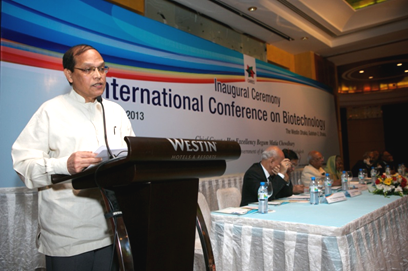 He added that with increasing population and food production facing various environmental stresses, applications of biotechnology holds immense prospects for food and heath sectors. He stressed on the need to invest in biotechnology by government, universities, business and industries. He also emphasized on the importance of Professors being involved in launching biotechnology-led companies along with businessmen and vice versa. He also mentioned that critical point of human resources has already been reached in Bangladesh with large number of science graduates and researchers existing in the country. He appreciated the importance of banking sector in promoting science and cited DBBL for their partial involvement in sponsoring the CARES conference. He spoke a line or two about CSR (corporate social responsibility), the need to support funding of biotech research by industry and business, adding that Bangladesh Bank would be pleased to support this sector. He referred to such support CSR for CARES, adding that if CARES remained focussed, CSR support would continue.
- Professor Md. Rafiqul Hoque, Vice-Chancellor, Bangladesh Agricultural University stated that world population increase was putting pressure on food production and healthcare, 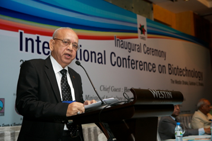 adding that biotechnology could help withstand this biological pressure. He stated that some good research work on crops, livestock and fisheries sectors have been going on at BAU for the past 20 years. He stressed on the importance of having a national and international stakeholders to come forward for the improvement of Biotechnology in Bangladesh as research in biotechnology was expensive.
- H.E. Dr. Tissa Vitarana, Senior Minister of Scientific and Technology of the Government of Sri Lanka referred to presence of world's highest number of poor people in South Asia, adding that the path to change this situation was science, technology and innovation. Mentioning about the rich natural resources and Biodiversity in the region, the Minister stated that countries should concentrate on high value addition to raw material before exports. He also cited the examples of the investments in the sector of Biotechnology of USA, Japan, Korea and Singapore.
Dr. Vitarana also talked about regional (SAARC) collaboration on research and industrial innovation. He stated that only with investments in biotechnology, nanotechnology and IT, our countries would be able to break the cycle of poverty. He wished that this conference will establish links to promote the sector of Biotechnology in Bangladesh. - The chief guest of the ceremony Begum Matia Chowdhury, Hon'ble Minister of Agriculture of Government of Bangladesh focused on the importance of Biotechnology in the upcoming challenges of climate change and in producing stress tolerance crops and nutritional enrichment. She mentioned that Bangladesh agriculture has made significant advancement, mentioning that while 11 million tons of rice was produced 40 year ago, 33.5 million tons was produced last year. She added that the country needs new tools to meet agricultural challenges as old agro-tools were not more capable of meeting the demands. She emphasized on an urgent need to reinvigorate agriculture research as the country has only 8.25 million hectares of land available for crop production which has been declining steadily due to small land holdings, vagaries of nature, urbanization and land degradation.
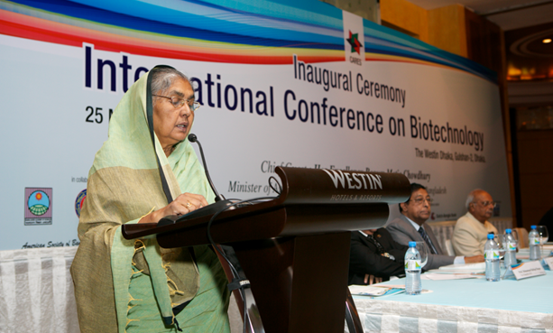
The Minister mentioned that redesigning crops plants to increase production has become a necessity. She added that to address the challenges of more productivity, bio-technology could play an important role in increasing yield and addressing environmental stresses as many countries in the world already has taken up this method.She emphasized on the commercialization of GM crops keeping all the ethical and safety issues in mind and pointed on the success of Jute genome and the involvement of Bangladesh Government in this field, mentioning the works of Dr. Haseena Khan and Dr. Moqsudul Alam. She stated that while her government was cautious about new tools of science, but would not be a roadblock in any manner. She added that Biotechnology has to serve the cause of the society on sustainable basis. She stated that development of biotechnology in Bangladesh has to confirm with national and international regimens and capacity building for research and applications have to be undertaken. The Minister concluded her address with assuring the promotion of biotechnology even with the limitation of resources.
Scientific Session 1
Topic: Medical Biotechnology: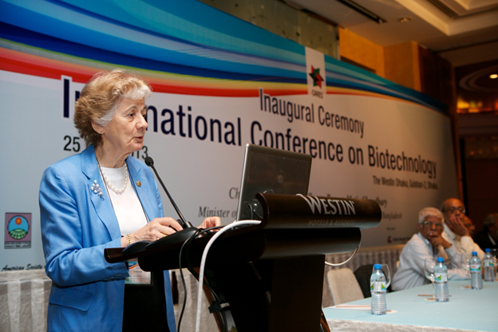
- Professor Rita Colwell from University of Maryland, USA, an internationally reputed scientist, started the session emphasizing that the outbreaks/ epidemic of cholera were related to degradation of the environment. She mentioned about the new biotypes of Vibrio cholerae had been discovered in different regions of Bangladesh, India and other countries but the eradication of such strains might not be possible without ensuring safe drinking water and good sanitation. She mentioned about a study where use of Saree, at typical clothing of Bangladeshi women, folded in four layers and used to filter water had proved to be a good approach to control cholera. She pointed out that the risk of the spread of cholera depends on the season: association with zoo and phyto-planktons and other environmental factors like temperature, rainfall etc. She stated on the similarity on genome of influenza virus with cholera emphasized on the lateral transfer of genome between the organisms.
- Professor M.R.S. Rao from India delivered a presentation on Glioblastoma Multiform, the aggressive brain tumour. He emphasized on the genomics, system and molecular approach and gene signature associated with brain Glioblastoma.
- Dr. Firdausi Qadri of ICDDR, B highlighted on the hopes and possibilities of Biotechnology and Biomedical science in Bangladesh. She also mentioned about recent research works where biotechnology was being applied to develop typhoid and cholera vaccines, salinity tolerant rice plant, new approaches to address arsenic poisoning etc. She also urged for availability of funding to carry out expanded research in these sectors.
- Professor Partha P. Majumder's (from India) presentation was on Genomics of Immune-Response to Vaccines against Enteric Infections. He showed that differences in immunological response among recipients of vaccines against infectious diseases are determined by both their genetic differences and environmental factors. Enteric infections, such as typhoid and cholera, are a major public-health burden in many regions of the world. With the goal of understanding the role of genomic factors in the determination of protection to vaccines, as measured by immunological response, conferred by typhoid and cholera vaccines, they had conducted two large studies in India. Typhoid: Significant associations of response with SNPs in seven genes (DEFB1, TLR1, IL1RL1, CTLA4, MAPK8, CD86, and IL17D) were discovered and cross-validated. Overall, (a) immune response to polysaccharide antigens is qualitatively different from that to protein antigens and (b) polymorphisms in genes involved in polysaccharide (LPS) recognition, signal transduction, inhibition of T-cell proliferation, pro-inflammatory signaling, and eventual production of antimicrobial peptides are associated with antibody response to the LPS vaccine for typhoid. Cholera: Significant associations of four SNPs and haplotypes in three genes (MARCO, TNFAIP3, and CXCL12) with response were discovered andvalidated. XCL12 is a neutrophil and lymphocyte chemoattractant that is upregulated in response to V. cholerae infection. LPS in the vaccine possibly provides signals that mimic those of the live bacterium. TNFAIP3 promotes intestinal epithelial barrier integrity and provides tight junction protein regulation; possible requirements for adequate response to the vaccine. LPS is a potent activator of innate immune responses and a ligand of MARCO. Variants in MARCO have been found to be associated with LPS response but not with high vibriocidal titre level.
- Dr. Zakir Hossain from Singapore spoke on Creation of Knock-out Mouse Models by Transgenesis to Understand Human Physiology and Diseases. He stated that the anatomy, genetics, and physiology of mouse model is very close to higher mammals, including human; thus, mouse is a rational and relevant model for biomedical research. The rapid advancement in genome bio-informatics and transgenic technology enables the fine mapping and precise engineering of mouse genome. He focused on the importance of knockout mice in understanding human physiology and disease most importantly cancer biology. Subtle or severe phenotypes correlated with the gene-expression pattern and molecular function of a specific gene of interest. Homeo-domain genes Emx/Otxare involved in early patterning of embryonic brain, knock-out or knock-in of these genes caused regionalization defects in the brain. Zo2/Tjp2, a scaffolding protein associated with tight junctionis required in early embryogenesis and targeted inactivation of Zo2, caused embryonic lethality at embryonic day 6.5 (E6.5). Testis-specific cold-shock-domain gene (Msy4) is important for spermatogenesis, and inactivation of these gene caused male infertility in mice. A transcriptional co-activator Taz/Wwtr1, highly expressed in kidney and lung, is a candidate gene for polycystic kidney diseases and pulmonary emphysema. Aberrant expression of Taz is associated with non-small cell lung cancer. Dr. Hossains conclusion was that knock-out and knock-in mice are powerful tools to understand the genetic link in the biological process and diseases, which can, thus, serves as a rational pre-clinical model for the therapeutic target discovery and validation of many diseases.
Scientific Session-2
Topic: Agricultural Biotechnology- Professor Asis Datta (from India) spoke about the importance of biotechnology in the agriculture of India. He pointed on the new types of gene technology for the betterment of agriculture of India for example delaying the ripening process of tomato minimizing the economic loss of cultivators during transportation and delaying of export.
- Professor S.K Sopory, Vice Chancellor of JNU, India dwelt on importance of food security for each and every person on the earth by increasing food production. He mentioned that as temperature is different at various places of the world, so scientists have to develop rice varieties that would be cultivable under different harsh/fragile conditions like extremely high temperatures, drought, submergence as well as salinity.
- Professor Muhammad Manjurul Karim of University of Dhaka, Paper title:
Probiotic Technology: A new solution for Sustainable Aquaculture in Bangladesh
informed that mass mortality and consequent crop failure in aquaculture of Macrobrachium rosenbergii, the giant freshwater prawn, one of the most important commercially-produced crustaceans in Bangladesh, is due to the emergence of various pathogenic bacteria and viruses and their resistance to chemotherapeutic drugs. Finding a public-health and environment-friendly alternative is, therefore, a burning question to ensure the sustainability of this industry in Bangladesh. They did several studies on the activity of Probiotics like lactobacillus and found that these organisms are an important candidate to control antibiotic resistant bacteria. The inhibition of bacterial growth could be attributed to some extracellular substances released from Lactobacillus spp., demonstrating its potential to be an excellent probiotic candidate for possible applications in prawn aquaculture. If successfully transferred to rearing environment, this will be an eco-friendly approach to counter bacterial infections without compromising the quality of prawn, thereby ensuring food safety in the prawn industries of Bangladesh. - Professor Zeba I Seraj from University of Dhaka made a presentation on her recent advancement in developing salinity tolerance of rice and also on gene pyramiding research. These varieties are essential for cultivation in the saline coastal areas of Bangladesh vulnerable to climate change. Marker-assisted backcrossing was used in the lab to introgress a large region or rice chromosome 1, called Saltol, into the mega-rice varieties, BR11 (T. Aman) and BRRIdhan28 (Boro), and several near isogenic lines (NILs) were produced in a collaborative effort with BRRI. Some of these salt- tolerant BR11 lines and BBRI dhan28 lines have given yield advantage over their parents in both normal soil and salinity-affected areas. Novel salt tolerance determinants from Rice Landraces adapted to the coastal areas of Bangladesh, such as Boilam and Horkuch, are being identified. These QTLs can then be introgressed into existing varieties to produce a higher level of salt tolerance. Different genes shown to confer salt tolerance, including Na/H antiporters, detoxification genes, RNA/DNA unwinding genes and transcription factors have been cloned and transformed into rice and are in various stages of development. The best-performing plant is selected at T2. The transgene is then backcrossed into farmer-popular high-yielding varieties. The Agrobacterium tumefaciens mediated in Planta method is being tried to avoid tedious tissue culture and plant regeneration steps. Using this method, they have introduced several genes into BRRI dhan 27, 28, 36, 47, and 55.
- Professor M.A. Rahim from Bangladesh Agriculture University focused on the adverse health aspects of use of chemicals like calcium carbide, formalin and ethylene for early season ripening of fruits which are toxic for health. It will be better if we do not depend on market and better to produce fruit, he suggested. Most consumers give preference to colourful fruit, but these should be avoided considering health hazards.
Scientific Session -3
Topic: Economy, Industry and Environment- Dr. Mahabub Hossain Executive Director BRAC Bangladesh said Bangladesh agriculture needs boosting of production through biotechnology to meet the growing demands of increasing population. He mentioned the need to develop high yielding varieties of crops which could tolerate submergence salinity, drought, cold, heat to meet the need of growing population. He also gave some examples and biotechnological approaches to address the challenges as well as the improvement in this sector.
- Mrs. Rokiya Afzal Rahman, former Advisor of Caretaker Government and Entrepreneur, gave an overview of the importance of biotechnological applications. She also mentioned that biotechnological products could address famine & health issues, according to environmental challenges that may prevent traditional methods & technologies. She also mentioned about important applications of biotechnology in environment, food & health. She also mentioned about possible positive impact of biotechnology on industry and economy. She said that it was quite important to develop appropriate methods to increase shelf life of harvested crops.
- Dr. Sirimali Fernando, Advisor to the Senior Minister of Scientific Affairs and also the Chairperson of the National Science Foundation, Sri Lanka said technological revolutions could be providing rapid economic development. She also said biotechnology should be a new revolution in the world in 21st century. She mentioned that of all research going on in her country, 15% was basic research, 75% was applied research and only 10 % was experimental research. She stressed the need for increased involvement of the private sector in the field of nano-technology over the years to reap optimum benefit from this branch of science.
- Mr. M. Anis Ud Dowla, Chairman, ACI stated that Bangladesh had missed IT opportunities 40 years ago when it was available and offered to us at almost at no cost. Now we should seize the opportunities that Biotechnologies has to offer. He said that scientific research could provide a long term profit in business, if commercialized. Funds and loan should be made available for research, he added. Public sector and NGOs should be encouraged to make partnership with private sector to commercialize biotechnology in Bangladesh, he opined.
- Professor Anwar Huq Microbiologist from University of Maryland, USA presented a paper on High-Tech Science for a Low-Tech Solution: Sari Filtration for Cholera Prevention. He showed that Cholera bacteria attached to their host, the copepod, in the aquatic environment, can be removed from the water by simple filtration, a method developed in our laboratory at the University of Maryland and was field-tested to determine its efficacy. Using the sari filtration method, 99% of bacteria attached to copepods and particles were removed from water. A field trial in a population of 45,000 in Matlab, Bangladesh, using four layers of sari cloth resulted in 48% reduction of cases of cholera. A follow-up study was carried out in the same villages five years after the original trial and showed that the filtration method is sustainable, continuing to protect villagers, with 25% fewer cases of cholera where filtration was continuing to be used. Additional analysis showed an indirect herd protection, i.e. protection for households from cholera when surrounded by those families who did filter their water. He concluded that a simple filtration proved to be effective and was based on ecological studies carried over the past 30 years. It can save lives without financial burden to the community, if implemented properly. (Only four layers of cotton saree filtration provides better filtration than one or two folds of saree to filter the water-borne bacteria)
Dinner and formal launching of CARES:
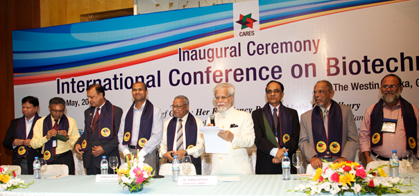The evening program- dinner- turned out to be much more than just that. It was a unique event in many ways. Chairman Dr. A. Majeed Khan addressed the guests and appraised them about how CARES had made this journey from its conception as an idea and vision, taking nearly four years of intense networking and motivating persons from important cross-section of the society. He mentioned that the Founding membership had grown to over 100 members and that it is the members of CARES who make the organization. He added that the 'fetus' that was CARES was born and now needs to grow. He thanked all CARES members and then honored them with sashes and coat-pins.
Some eminent persons who were honored with CARES Fellowships and crests for their contributions in respective fields of science were: Prof. M. Shamsher Ali, Prof. Ahmed Shamsul Islam, Prof. Rita Colwell and Prof.
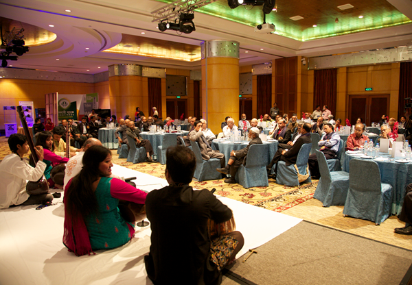
Aminul Haque. (Prof. Kazi M. Badruddoza and Dr. Zafrullah Chowdhury were not present, Prof. Zeba I Seraj accepted the crest on behalf of her father Prof. A. S. Islam). The dinner was preceded by a Sarod recital by Ustad Shahadat Hossain Khan and his two daughters.
The evening was the very first occasion when Founding and Primary members of CARES gathered and found occasion to know each other.
May 26, 2013
Session 4
Topic: Biotechnology Research and Development: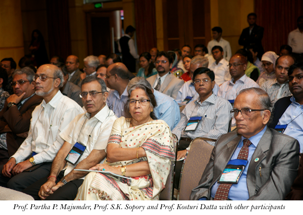
- The session started with a video conference with Dr. Golam Morshed, Clinical Professor at the University of British Columbia, Canada who gave a brief overview of pharmaceutical and clinical diagnostic industries in Bangladesh through his paper Prospects and issues for developing biotechnology industries in Bangladesh: laboratory perspectives. He talked about importance of microbiology oriented industries and the ways are small, medium as well as large scale industries can be placed. Biomedical graduates are underused in Bangladesh, and they are highly capable in basic, applied, developmental and product-oriented research with proper research facilities. He emphasized on reputation and quality of work to be delivered. He suggested that on small scale, specific targeted labs would be beneficial which could provide services specific tests like only hepatitis B test; for medium scale industries, he gave examples of monoclonal antibody producing industries against exotic pathogens, terming it as the future diagnostic market. As for large scale microbiological industries, he suggested production of vaccines. He suggested some points on how these projects can be implemented and how CARES can help in this regard. He suggested organization of workshop involving students, pharmaceutical and diagnostic company leads and entrepreneurs. This think-tank group meeting can make a product list and business plan.
- Next presentation was given by Dr John Clemens, Executive Director, ICDDR, B. He talked about a new type of oral cholera vaccine which was safe to administer and had shown to have major impact on cholera control, based on both direct and herd protective effects. He stated that such vaccines are relatively cheap and is now WHO recommended.
- Ms. Jaishree Pandey from Nepal Academy of Science, talked about status of biotechnology in Nepal. She gave a brief overview of the challenges of Food Security they faced and the actions taken for advancing and establishing biotechnology research in the country. She focused the lack of cooperation in this sector. She discussed the issues and challenges now taking place to inhibit the progress in biotechnology research in the country, lack of financial and human resources being primary constraints.
- Next address was by Professor Kasturi Datta, Distinguished Biotechnology Professor from India. Her team had identified HABP1-a multifunctional protein from human chromosome 17. HBP-1 for Hyalouronan Binding Protein-1. They observed the differential expression this gene in normal and tumor tissue by histological analysis as well as microarray and proteomic studies. They observed and correlated the increased expression of this gene with poor prognosis in patients with breast cancer and recommended its use as a marker for cancer.
- The last presentation of the session was by Dr. Iqbal Hossain Khan, Head of the Biotechnology Division of the Incepta Pharmaceutical Ltd. In his presentation entitled Current trends of biosimilar growth open opportunities for Bangladesh, he gave a brief scenario of global biosimilar markets drawing examples from neighbouring country India. Biosimilars or follow-on biologics (FOBs) of many blockbuster biopharmaceutical products will lose patent protection of 21 products within 2019 having a total market value of over US$ 50 billion. Since the top 25 biologics are driving 83% of global sales, patent expiry of many of these products is opening up new possibilities for FOB players in the next five years. Shifting in disease patterns, product demand, and better tertiary care boost enormous commercial opportunity for the companies interested in FOBs. However, due to the high clinical development and manufacturing costs (US$ 40-80 million), the price difference between biosimilars and corresponding originator products is still a challenge. It needs at least 40-50% price reduction from branded products to meet the customer's expectation. Being a new field based on a new regulatory pathway, FOBs are in direct competition with some very large, well-established innovator companies with enormous budgets. Similarly, Bangladesh can enjoy facility and development costs than peers in developed countries and add another pillar of success achieved in small molecule generics by partnering with large multinational corporations for clinical trials and regulatory approval process in EU/US.Then he described in brief the facilities available at Incepta for establishing the Biosimilarity market. Advantage of this will be such that extensive clinical trials would not be required.
- Professor Sharif Akhteruzzaman, (Dept. of Biochemistry & Molecular Biology) University of Dhaka, paper: Genetic polymorphism of 30 InDel markers for forensic use in Bangladeshi population. The purpose of the study was to assess the suitability of 30 InDel polymorphisms in forensic applications and population studies. Insertion-deletion polymorphisms (InDels or DIPs) represent a large portion of all polymorphisms in human genome. These are basically length polymorphisms created by insertion or deletion of one or more nucleotides, combining the common features of both SNPs and STRs. Their low mutation rate, smaller amplicon size, and multiplexing capability made the polymorphisms suitable for use in forensic and parentage testing. This study investigated 30 diallelic autosomal insertion-selection polymorphisms in a set of Bangladeshi population sample. The analytical methods involved the extraction of genomic DNA from peripheral blood samples. The extracted DNA was PCR-amplified in a multiplex fashion. The resultant PCR products were separated by capillary electrophoresis for genotype assignment. Allele frequency, observed and expected heterozygsity, polymorphism information content, probability of match, power of discrimination, typical paternity index (TPI), and power of exclusion were calculated for these loci. The Hardy-Weinberg equilibrium tests demonstrated no significant deviation from expected values (p>0.00167, after Bonferroni correction for multiple testing). The random probability of match was 2.87X10-12, and the cumulative power of exclusion was 0.99470 for the 30 loci. The study concluded that the high level of power of discrimination (0.999999875) makes it well-suited for the identification of individuals. However, a relatively-low range of TPI (0.791-1.179) and PE (0.0685-0.263) limits its usefulness in paternity and kinship investigations. The studied 30 InDel loci thus offers a good supplementary tool for resolving challenging kinship studies and an efficient alternative to SNP typing in the studied population.
- Dr.S.K.Roy, Chairman, Breastfeeding Foundation, Dhaka, made a power-point presentation on Biotechnology use on nutrition. Giving an account of different uses of biotechnology for nutritional point of view, he emphasized on the need of bio-fortification for increase of micro-nutrient uptake. He touched on the need for biotechnology to feed the world. He also spoke on addition of vitamin A and iron and potential of the golden rice to combat malnutrition.
- Professor Mohammad Alimul Islam, (Dept. Microbiology & Hygiene) BAU, Mymensingh, Paper: Development of a novel universal multiplex RT-PCR kit for rapid sero-typing of dengue, Chikungunya, Japanese encephalitis and West Nile viruses from clinical and field samples by single-step- single-tube reaction. His paper was designed to develop a rapid and simultaneous detection of most important arboviruses of human being of the tropical and sub-tropical countries of the world. ELISA and other serological tests, RT-LAMP, NASBA, and conventional RT-PCR have been used for the detection of antigens and antibodies of dengue, Chikungunya, Japanese encephalitis, and West Nile viruses all over the world. All these tests are time-consuming, laborious, and costly, and the result of diagnosis is sometimes confusing. Any of the above-mentioned tests, which have been designed for the detection of one viral genome from other viral genomes, remains undetected. The sensitivity and specificity of a multiplex RT-PCR depends on the design of primers, uses of enzymes, and condition of nucleic acid amplification. In this study, three DNA-polymerase (LA-Taq, r-Taq, and Tth) and two reverse-transcriptase (AMV-RT and RT-ACE) were used. Highly gene-specific primer was designed against each of the four serotypes of dengue and other serotypes of Chikungunya, Japanese encephalitis, and West Nile viruses to increase the sensitivity and specificity of MRT-PCR. Of the six combinations, the AMV-RT (reverse transcriptase) and La-Taq (DNA polymerase) combination was found to be the best in terms of sensitivity and specificity of the MRT-PCR, which could detect a minimum number of any of the four species of arboviruses obtained either from the clinical or laboratory or field samples. The test was found to be cost-effective (Tk 50.0/US$ 0.60), rapid (1.5 hours), and sensitive (0.1 FFU can be detected). Anyone, either from the developed or developing countries, having minimum knowledge on PCR can easily perform the test either in the hospital or in a diagnostic centre dealing with bulk samples where the diseases are endemic.
- Dr. Tanvira Afroze Sultana, Asst. Prof. of Hematology, BIRDEM, Dhaka, Molecular diagnostic tests in Bangladesh: challenges and opportunities. She showed that molecular diagnosis was rapidly becoming an inseparable part of disease diagnosis. This cutting edge technology can be used to diagnose both malignant and infectious diseases as well as help in determining drug dosage, tissue types for organ transplant and risk of inherent disorders. An added advantage is that it provides an indication of therapeutic choices and disease prognosis. Hospitals namely BSMMU, BIRDEM, CMH, Square, Apollo, icddr,b and diagnostic laboratories such as DNA Solutions, Labaid, Medinova and Popular Diagnostics Ltd have introduced molecular diagnostics in Bangladesh. PCR-based tests are available for MTB, HBV, HCV, HIV, HPV and for few leukemias. Immunophenotyping has been introduced in one institute and one private hospital but the service is interrupted by various limiting factors. FISH is unavailable in the country. The conclusion was that Bangladesh has immense potential for development of molecular diagnostics in the country. Establishment of specialized institute on molecular diagnostics can yield a score of professionals. Strong commitment from physicians, molecular biologists, financial companies, and government policy makers together is required to bring molecular diagnostics to the doorstep of every citizen of our country.
- Dr. Shamsun Nahar Khan, (Asst. Prof. Dept of Pharmacy) East-West University, Dhaka, Role of 7SK snRNA in HIV1 replication: future drug designing. In her study she RNA plays crucial roles in many disease pathogenesis and has gained a lot of interest as a tool for functional genomics and equally important as a promising therapeutic approach for the treatment of various diseases e.g. HIV, diabetes etc (Bumcrot et al. 2006; Castanotto andRossi 2009; de Fougerolles et al. 2007). In the present study she focused on the 7SK small nuclear RNA (snRNA), which is abundant with 331-nucleotide. Its one of the important functions as a transcriptional regulator during the elongation phase of HIV-1 virus. Immunodeficiency virus (HIV) exploits host's cellular proteins during its replicative cycle and latent infection. The positive transcription elongation factor b (P-TEFb) is a key cellular transcription factor critical for these viral processes. 7SK RNA binds to HEXIM1 regulatory domain and promotes the binding of the HEXIM C-terminal domain to cyclin T1/T2 of P-TEFb. P-TEFb shows little CTD kinase activity during its sequestering with 7SK and HEXIM1; it indicates that 7SK snRNA in collaboration with HEXIM1 function as an inhibitory factor of PTEFb. HIV-1 successive viral replication requires recruitment of P-TEFb by HIV-1 TAT protein for the completion of the viral RNA transcription process. Thus one of the burning hypotheses is 7SK snRNA and HIV-1 protein Tat interaction. In her study she presented evidence of strong binding interaction of 7SK snRNA and HIV-1 protein Tat with promising data of 2D NMR spectroscopic studies and ITC (isothermal calorimetric analysis) and future direction of drug designing.
- Professor Muhammad Tufazzal Hossain Howlader, (Dept. of Entomology) BAU, Mymensingh, in his paper: Functional structures of Cry4Aa toxin responsible for mosquitocidal activity against Culex pipiens showed that Cry4Aa is a mosquitocidal protein produced by Bacillus thuringiensis subsp. israelensis. Cry4Aa exhibits potent and specific toxicity to Anopheles, Aedes, Culexmosquito larvae. These mosquitos are vectors of malaria and viral hemorrhagic fevers. Hence, Cry4Aa attracts great interest for developing bioinsecticide. Loop structures exposed on the surface of Cry4Aa molecule was analyzed by alanine scanning. At the same time, the polypeptides derived from domains II and III of Cry4Aa were expressed as alkali-soluble inclusions using the expression vector, p4AaCter. The polypeptides ware purified using Ni-charged affinity column. Interaction between these polypeptides and the brush border membrane (BBM) proteins prepared from C. pipiens larvae were analyzed using quartz crystal microbalance (QCM) device. Involvement of sugars on Cry4Aa toxicity was also analyzed by bioassay using C. pipiens larvae. Alanine scanning analyses revealed that the loops exposed on the surface of Cry4Aa (loops between beta1-alpha8, beta2-3, beta4-5, beta6-7, beta8-9, and beta10-11) could be modified without a loss of its mosquitocidal activity. The analyses using QCM device revealed relatively high affinities of the polypeptide of beta1-alpha8, beta2-3, and domain III to BBM proteins, and their KD were estimated as 59, 54, and 63 nM, respectively. Bioassay using the Cry4Aa pretreated with various monosaccharides revealed the enhancement of toxicity by GalNAc pretreatment. On the other hand, the pretreatment with fucose inhibited the toxicity of Cry4AMultiple subsites that work cooperatively for receptor binding may be spread out in domain II and III of Cry4Aa. Especially, the domain III of Cry4Aa may interact with BBM proteins via GalNAc and/or fucose residues of its sugar-side-chain. Thus, the mechanisms of Cry4Aa is a unique and may be quite different from that of well-characterized other Cry toxins.
- Professor Abul B.M.M.K. Islam, Department of Genetic Engineering and Biotechnology, University of Dhaka, Paper: Promise of Bioinformatics in Pharmaceutics and Diagnostics. The combination of high-throughput technologies with information technologies has produced an enormous amount of information relating to biomedicine, he stated, adding that extensive growth in biomedical data generation had not yet been translated proportionately for clinical returns. Bioinformatics holds immense promise in this area by developing new tools to efficiently capture, curate, and analyze these huge data, thereby helping diagnose diseases, identify drug targets, and develop new medicines. Integration of multi-dimentional genomic data and genome-wide association studies (GWAS) may contribute profoundly to explore the mechanism of complex diseases. However, it requires correct record of phenotypic information. Bioinformaticians can play a role to develop software for collecting, integrating, and extracting clinical information; database development, and data management. They further can develop a database of novel mutations/SNPs and their associations with drug responses. Such high-throughput studies with Bangladeshi patients, however, are still very limited and should be explored. While conventional diagnosis may sometimes be erroneous, bioinformatic methods/tools may help us find out disease-specific gene signature or biomarkers for accurate and specific molecular diagnosis. This method may also classify diseases, find new disease genes, delineate the pathogenic pathways, predict patients' survival time, predict functional consequences of mutations, identify the mode of action of candidate drugs, and improve therapy by detecting and clustering important disease subtypes. Recently, the Open Source Drug Discovery initiative for system-level understanding has drawn much attention. Computer-aided drug design can dramatically reduce time and cost of effective biopharmaceuticals. Fortunately, Bangladesh has enormous varieties of plants having medicinal value, whose active compounds can be tested computationally for rational drug design. Recently, epigenetic enzymes have drawn much attention as drug target due to their reversible nature. Wealth of data generated world-wide can be analyzed to find epigenetic drug target and predict clinical outcome and possible side-effects. Correlation- and network-based analysis is becoming more promising for designing combinational therapy. As the new era of personalized medicine is approaching, development of new bioinformatic systems and databases is needed for individualized therapies. Therefore, translational bioinformatic applications in genome medicine are expected to generate a great hope for future medicines.
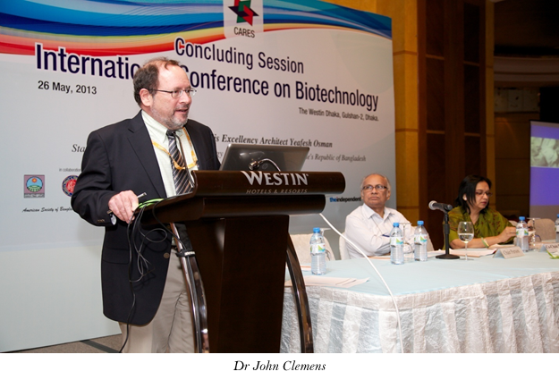
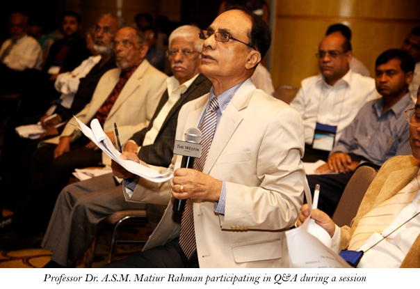
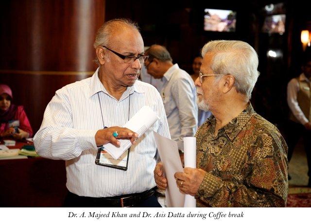
Session 5 (three parallel sessions)
Session 5.1: Medical Biotech
Paper Presenters:
5.2: Agriculture and Environment
Paper Presenters:
- Professor R.H. Sarker, (Dept. of Botany) University of Dhaka, Development of fungal disease resistance in lentil (Lens culinaris Medik.) following Agrobacterium-mediated genetic transformation. His investigation showed integration of fungal diseases-resistant gene in lentil (Lens culinaris Medik) plants through Agrobacterium-mediated genetic transformation. As an integral part of Agrobacterium-mediated genetic transformation, three different explants, namely cotyledonary node, decapitated embryo, and cotyledon attached decapitated embryo, were used for developing a transformation compatible regeneration system. Regeneration of multiple shoots was achieved via direct organogenesis from the above-mentioned explants on MS medium supplemented with 0.5 mg/L BAP + 0.5 mg/L Kn + 0.1 mg/L GA3 + 5.5 mg/L tyrosine. Among the three explants, cotyledonary node explants showed the best result towards in vitro regeneration. However, the regenerated shoots failed to achieve an effective root system. Encouraged by the reports of previous workers, it was tried to induce in vitro flowering on regenerated shoots to overcome the problem of rooting in obtaining complete plantlets. The best response regarding the development of in vitro flowering was obtained by culturing regenerated shoots on half strength of MS medium containing 20 mg/L IBA and 0.5 mg/L NAA. Transformation experiments were performed using two strains of Agrobacterium; one was with marker genes (denoted as strain I) and other with antifungal gene (denoted as strain II). The marker strain LBA4404 containing binary plasmid pBI121 conferring β-glucuronidase (GUS) and nptII gene was resistant to kanamycin. Antifungal strain EHA105 harbouring bar gene was resistant to phosphinothricin and chitinase gene. Considering transformation and regeneration efficiency, cotyledon attached decapitated embryo was found to be best among all the explants studied. For strain I, transformed shoots were selected using 200 mg/L kanamycin. On the other hand, 2.0 mg/L phosphinothricin was found to be optimum to select transformed shoots containing fungal resistance genes. Transformation frequency for strain I and strain II was 1.06% and 0.49% respectively. The selected shoots developed in vitro flowers following their subculture on half strength of MS medium containing 20 mg/L IBA and 0.5 mg/L NAA with 50 mg/L ticarcillin. After 12-15 days, most of these flowers produced fertile seeds on the same medium. Seedling germinated from these in vitro raised seeds was successfully transplanted to soil for the development of further progenies. Genomic DNA was isolated from these transformed lentil shoots for molecular analysis through polymerase chain reaction analysis. In the case of strain I, stable integration of GUS gene was confirmed by PCR analysis. For strain II, the integration of fungal diseases-resistant gene within the genomic DNA of transformed shoots of lentil was confirmed. This technique of in vitro flowering and seed formation can be exploited to develop transformed seeds in lentil since in vitro root formation appears to be a major constraint in obtaining complete plantlet under in vitro condition.
- Dr. Mirza Mofazzal Islam, (Principal Scientific Officer, BINA), Mymensingh, Salinity-tolerant rice variety for combating climatic disaster and assuring food security. The author began with a statement that more than 1 million hectare of rice lands in Bangladesh are affected by salinity, including 53% of the coastal areas due to global warming and recent climate change, further degradation will cause detrimental effect on food security. Use of salt-tolerant varieties is the most economical and effective way of increasing crop production on saline soils. Salt tolerance trait is complex genetically and physiologically. Biotechnology with conventional breeding can facilitate the development of salt tolerant varieties. Out of 60 rice germplasm, 20 selected, only Binadhan-10, new salt tolerant rice variety can tolerate up to 12 dS/m of salinity which can be cultivated in 40-50% of fallow lands in both Boro (dry season) and Aman (wet season) seasons. The farmers can get yield of 5.5-6.5 t/ha in saline land and 7.5-8.5 t/h in non-saline lands. Dissemination of this variety in a large scale, it would enable the farmers in 13 coastal districts to get higher productivity, ensure food security and improve livelihood.
- Professor M.S.A. Fakir, (Dept. of Crop Botany) BAU, Mymensingh, paper: Food security in Bangladesh: Cassava (Manihot esculenta Crantz) could be a potential supplementary crop to rice and wheat. He demonstrated that cassava could be grown in hill slope, roadside, homestead, in borders ('ails') of rice fields, and hence it would not compete with rice land. All these qualities make cassava a climate resilient crop. Fresh tubers are boiled and eaten like sweet potato, and cooked like potato. Processed fresh leaves are excellent source of protein rich vegetable and compost. Flour and starch extracted from cassava tubers are used as an alternative to wheat flour. Flours and pellets are widely used as animal food. Fresh tubers were sliced into particular size and boiled at 1000C and were served with salt. Fresh tubers were sliced and sun dried to desirable moisture content. Dried tubers were milled into flour. For starch extraction, chopped fresh tubers were blended with adequate water and the filtrate was decanted to starch. The starch obtained was then dried in the sun and was ready for use. 'Chapati roti', cake and pie etc were prepared using 10-40% cassava flour mixed with wheat flour. Cassava based these baking products were equally liked by most people. It appears that cassava could be potential supplementary food for rice and wheat in Bangladesh.
- Professor Lutful Hassan, (Dept. of Genetics & Plant Breeding) BAU, Mymensingh, title of the paper: Progress in generating bio-engineered crop plants for sustainable agriculture spoke on research on genetic transformation of the local varieties of Brassica campestris and B. napus using Agrobacterium-mediated transformation. Agrobacterium rhizogenes strain LBA 9402 was used for the production of hairy roots. For co-transformation experiments, the strain LBA 9402 with the binary vector pBIN19 containing the p35S GUS INT gene was used. For plant regeneration, 0.5 mm sections of root material were excised and treated with a liquid callus-inducing medium (C23g) for three days. These were then placed on N5 medium with antibiotics. The GUS staining was carried out according to Jefferson et al. (1987). A. tumefaciens strains: (i) GV3101 with the vir plasmid pMP90 and (ii) the strain C58C1 ATHV with the vir plasmid pTiBo542, a strain similar to EHA101, were used. The selectable marker gene, nptII (neomycin phosphotransferase) was used. The reporter gene B-Glucuronidase (GUS) under control of the Ubi and the 35S-Promotor and with an Intron was used. Stem segments proved to be the best explant. Shoot regeneration in A. rhizogenes transformation experiments was not successful. Regeneration from A. tumefaciens-mediated transformation proved to be successful. Insertion of salt-tolerant genes (AtNHX1) from Arabidopsis thaliana in the popular varieties of Brassica genotypes is in progress. For sustainable agricultural practices, the transformed rapeseed varieties will be available for the farmers of the coastal wetland of Bangladesh.
- Professor K.M.S. Aziz, Fellow, BAS, Dhaka on behalf of Dr. Sonia N. Aziz presented a paper: Providing safe drinking water sources in rural Bangladesh. The paper dealt with widespread arsenic contamination of groundwater in Bangladesh, places the health of millions of Bangladeshis in jeopardy while pathogen contaminated surface water serves as an alternative. Water sources without high arsenic levels or pathogen contamination are scarce, affecting peoples' time available for work and other activities when they have to seek safe water to drink. Limited information and heavy constraints on resources may preclude people in developing countries from taking protective actions. The focus of this paper is to report on factors affecting protective actions taken by rural Bangladeshi villagers. Results show that people respond to information campaigns by taking protective actions, furthermore parents take more protective actions than individuals without children, and water procurers walk an average of 44 minutes one way to procure safe drinking water, even though arsenic contaminated water is available from tubewells nearby. The factors affecting protective actions are taken in conjunction with a stated preferences survey asking villagers their willingness to pay for a more convenient water source. The data can be used to support any public health mitigation policy, including biotechnology efforts for tubewell-head mitigation, to make convenient but arsenic contaminated tubewells viable again as a water source.
- Professor Masum Ahmad, (Dept. of Entomology) BAU, Mymensingh, presented paper: Biotechnological research of insects in Bangladesh. He showed that insects were major agricultural pests and transmit many vector borne diseases (e.g. malaria, dengue, kala azar etc.) to human and animals. Agricultural pests are responsible for losses (30-40%) if no control technique is applied. Until now the use of chemicals has been the only means of insect control in this country. Insecticide causes pollution, develop resistance, pose risk of residual toxicity in the commodities etc. Research have been carried out to facilitate nuclear and biotechnological fields in controlling insect pest and to exploit beneficial insects for the benefit of this country. The major area covers –development of eco-safe control measures for insect pests/ vectors. Irradiation as an alternative quarantine treatment for horticultural crops, higher quality yield production of silk and lac using low dose of gamma radiation, investigations of the radiation/ microbial pathogen induced damage of insect tissues and organs. Major achievements are—development of protocols for increased quality silk production, low cost liquid diet for mass rearing of fruit fly for using in SIT, protocols for developing bacteria based highly efficient mosquitocidal bio-pesticide, protocols for irradiation quarantian treatment for fresh fruits and vegetables and pest risk assessment of mango. Perspective plan is field application of bio-pesticide for mosquito management.
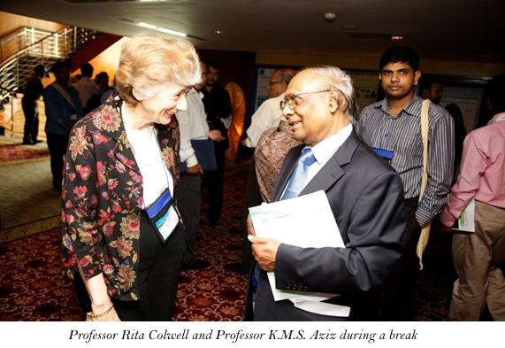
5.3: Microbial and Environmental Biotechnology
Paper Presenters:
- Professor Md. Mozammel Huq, (Dept. of Microbiology)University of Dhaka, Bioprocess development for eco-friendly microbial products and its impacts on bio-industry establishment in Bangladesh. The biotechnology industry can spark industrial development in Bangladesh not only due to her major dependency on agricultural productivities but prior and judicial commercial exploitation of microbial processes both genetically and culturally on local cheap raw materials could deliver agro-industrial products, such as biofertilizer, biopesticides, bio-energy, including industrial enzymes (on use in textiles and garments, leather processing, and poultry feed formulations), bio-pharmaceuticals, vaccines, etc. profitably, with impact on saving foreign currency, cleaner environments, food security, reduction of GHG, and development of critical manpower. Indigenous microorganisms were obtained through rationale screening for specific product synthesis capability with high titre; strain was improved by genetic manipulation and optimized for cultivation conditions on cheap agro-industrial raw materials, at both lab scale and pilot-scale level bioreactors. The recovery and purification process developed are simple based on the technical uses in the commercial sectors. He worked on the development of bioprocesses for production and technical applications of eco-friendly industrial enzymes and biopesticides based on indigenous microorganisms. The enzymes include proteases customized for tanneries (soaking enzyme, unhairing enzymes, bating enzymes), cellulase-free xylanases from thermophilic fungi for softening of low-quality jute fibres (fibres with high content of xylanase, pectin, and lignin) processing and in poultry feeds, cellulases from Trichoderma viridiae for biopolishing and keratinase from Bacillus spp. for conversion of poultry waste feathers to feed protein. Our microbial products, along with the imported enzymes, were tested for their respective technical applications at laboratory and pro-type pilot scale level, which demonstrated comparable performance. Furthermore, Bacillus thuringiensis biopesticide has been developed, and a large-scale production of Bt-endotoxin on cheap local substrates was done and applied in the field to control caterpillar-like pests with brinjal, cauliflower, and cabbage. The factors affecting the economic feasibility and sustainability of the processes worked in establishing bio-industries in Bangladesh will be discussed. The results could be a useful basis for commercial applications and development of bio-industries in Bangladesh.
- Dr. Nur A. Hasan, (Maryland Pathogen Research Institute) University of Maryland, USA, Paper: Change, exchange, and community iteractions in emergence and evolution of Vibrio cholera has shown that despite all medical and research advances, the global incidence of cholera is increasing steadily. Since V. cholerae is autochthonous to the aquatic environment, it is not possible to eradicate the disease but prevention is an achievable goal. To this end, he employed a holistic approach for acquisition of knowledge useful for lowering the burden of disease. A combination of microbiological and molecular methods, along with high-throughput genomics and metagenomic analyses, dissecting the micro niche of the bacterium to elucidate interaction within microbial populations in the environment and human, and investigating the genomic evolution of the bacterium to catalogue virulence markers and track their dissemination within and between toxigenic, non-toxigenic, and archived reference isolates. Investigating the distribution of a pool of virulence genetic markers, among 794 clinical and environmental V. cholerae samples, we demonstrated that the distribution of certain virulence genes is similar among most V. cholerae O1, O139 and non-O1/O139 whereas the distribution of the major virulence markers markedly differed among toxigenic and non-toxigenic strains. Metagenomic analysis demonstrated that aquatic environments harbour genetically diverse and complex microbial communities, including primary members of both freshwater and coastal ecosystems. The abundance and diversity of the microbial community, including Vibrio population, exhibited a complex seasonal distribution, and specific consortia among the natural community, perhaps stimulated as a result of positive selection, might be crucial to trigger V. cholera to overcome the natural competition and emerge in epidemic proportion. Comparative genome analysis of over 150 V. cholerae and its phylogenetic near neighbours demonstrated various genomic events, including inter- and intra-chromosomal re-arrangements, gene absence and acquisitions, chromosomal integration of phages, and other mobile genetic elements (MGEs), all of which are the important driving forces in the evolution of species Vibrio. The study also demonstrated that V. cholerae harbours an open pan genome, and the current pandemic is caused by strains belonging to a single phyletic line, diversified mainly via horizontal gene transfer from a dynamic Vibrio gene reservoir in the natural environment.
- Dr. Munirul Alam, (Senior Scientist) ICDDRB, Dhaka, Diarrhoeal disease epidemiology and ecology: changing climate and concerns. He showed that diarrheal diseases, particularly cholera, cause millions of morbidity and mortality world¬wide, mostly in developing countries where the sources of pure drinking water are scarce. Despite diarrhea being well-established as a seasonal disease with its annual recurrence in defined time periods in many endemic areas, the patterns of infections in Bangladesh differ regionally both in terms of the seasonality and the number of annual peaks, as opposed to a single annual peak occurring in most endemic areas of the world. Molecular epidemiological and ecological investigations over the years involving regional hydro-climatology, plankton, and V. cholerae abundance in water, including molecular microbiological (i.e., MLVA and comparative genomics) data on V. cholerae associated with the major cholera outbreaks world-wide (Asia, Africa, and the Americas) show strong evidence of a regional climate link in cholera outbreaks, and that the bacterium can evolve independently by acquiring virulence and related genes laterally, and transmit regionally and beyond, causing more severe disease. Their metagenomic data revealed the bacterial community dynamics during cholera and recovery showing how the changing climate and the consequent seasonal and off-season cholera (diarrhea) outbreaks affect human health by predisposing them to multi-drug resistant pathogenic bacteria.
- Dr. Abul Kalam Azad, Associate Prof. (Dept. of Genetic Eng. & Biotechnology) Shahjalal University of Science & Technology, Sylhet, presented paper title: Biodegradation of Reactive Textile Dyes by Bacterial Isolates. He stated that most textile industries in Bangladesh dispose of reactive dyes in the environment without any treatment and pollute the environment severely. To obtain bacteria having a remarkable ability to decolourize and degrade reactive textile dyes, 29 bacterial strains were isolated from the effluents collected from two textile mills and two leather industries. Screening of these isolates for dye decolourization and degradation capability was performed in the nutrient broth medium using eight structurally different reactive textile dyes. Of these bacterial isolates, 12 showing one or more dye decolourizing ability within 48 hours of incubation were identified. Morphological, cultural and biochemical characterization indicated two isolates as Aeromonas, three as Pseudomonas, three as Bacillus, two as Serratia, one as Citrobacter, and one as Morganella. The decolourization and degradation capability of Aeromonas, Pseudomonas, and Bacillus was optimized using Novacron Super Black G, one of the eight reactive dyes used. Physicochemical conditions for decolourization of Novacron Super Black G by the Aeromonas, Bacillus, and Pseudomonas isolates were optimized. These bacteria decolourized the reactive dyes and grew well in a high concentration of the dye up to 500 mg/L. Aeromonas sp., Bacillus sp., and Pseudomonas sp. showed significant dye decolourization by 93%, 92%, and 91% respectively at 200 mg/L dye concentration after 96 hours of incubation under optimum conditions. Biodegradation and decolourization of reactive dye were confirmed using UV-VIS spectrophotometry and Fourier transform infrared spectroscopy. Peaks of the parent dye compound completely disappeared after 96 hours of incubation. This result clearly indicated that the dye had been catabolized and used by the bacterial isolates. High decolourization efficiency and facile conditions of these bacterial isolates indicate their potential in the biological treatment of dyeing mill effluents.
- Professor M. R. Islam, (Dept. of Pathology) BAU, Mymensingh, Molecular epidemiological analysis of H5N1 highly-pathogenic avian influenza viruses of Bangladesh. He discussed highly pathogenic avian influenza (HPAI) viruses of H5N1 subtype which had been devastating poultry industry across the world since 2003. The virus also may transmit to human with high case fatality. In Bangladesh, H5N1 HPAI virus was first detected in February 2007. Since then the virus has become entrenched in poultry of Bangladesh and caused six waves of outbreaks. So far, there have been seven human cases of H5N1 HPAI infection in Bangladesh with one case fatality. The objective of the present study was to investigate the molecular epidemiology of H5N1 HPAI viruses circulating in Bangladesh since 2007. A fragment of HA gene of 21 selected isolates obtained at different time points was amplified by RT-PCR and subjected to gene sequencing and phylogenetic analysis along with reference strains of different clades and sub-clades. Full-length gene of different genome segments of selected isolates were also amplified by RT-PCR and sequenced either directly or after cloning in plasmid vectors. In addition, available gene sequences of other Bangladeshi isolates, established at international reference laboratories, were also downloaded from the GenBank. Phylogenetic tree was constructed for each genome segment. Molecular analysis was also performed on multiple alignment of deduced amino acid sequences of each protein. The results revealed that clade 2.2 virus was first introduced in Bangladesh in 2007; this was followed by the introduction of clade 2.3.2.1 and 2.3.4 viruses in 2011. Interestingly, in 2012 only clade 2.3.2.1 viruses were isolated. Phylogenetic analysis of individual full-length genome segments revealed at least two events of segment re-assortment. In three different H5N1 isolates either M or PB1 gene was substituted by the corresponding segment of low pathogenic H9N2 virus. Point mutations were also acquired at the potential active sites of different proteins. Implications of these HA clade shift, segment re-assortment and point mutations will be discussed.
- Professor Bazlur Rahman Mollah, (Dept. of Poultry Science) BAU, Mymensingh, title of the paper: Harnessing heterosis for growth though intergeneric hybrid: molecular cytogenetic studies on avian hybrid sterility. His research objeive was to harnessing heterosis for growth and reproductive traits in a major target area for improving productivity in livestock and poultry. Intergeneric and/or interspecific hybrids are often used foThese results suggest that the failure of meiotic chromosome pairing in primary spermatocytes by mutually incompatible difference in the chromosome morphology, which is followed by meiotic arrest at MI, might be a main cause of male sterility in mule ducks. FISH analysis of novel centromeric repeats indicates that the difference in the centromeric repeats in chromosome 1 and 2 between t A. platyrhynchos and C. moschata might be the cause of the failure of chromosome pairing in primary spermatocytes. The findings of these studies in mule duck will help improve our knowledge on the mechanism of sterility in avian species and assist in the production of mule duck for better meat production, he concluded.
- Professor A. K. M Golam Sarwar, (Dept. of Crop Botany) BAU, Mymensingh, Paper: Genera represented by single species in the angiospermic flora of Bangladesh and their conservation. He stated that Genera represented by a single species are one of the important groups of plant that are interesting not only in floristics study, but also in phytogeography and phylogenetic studies. These needed critical taxonomic evaluation and documentation, and also deserve special attention from the conservation point. He reviewed and updated the list of genera represented by single species in Bangladesh territory, their world-wide distribution and present conservation status in Bangladesh. He found that a total of seven hundred seventy seven genera of 160 families of flowering plants are represented by single species in the flora of the country. Among them, thirteen genera are monotypic in strict sense i.e., represented worldwide only by the 'Type species'. The number of genera represented by single species should be increased, as the inventory of plants of Bangladesh is far beyond the completion. Among the genera represented by single species, 4 species are endemic to Bangladesh. Fifty one families are represented only by single genus and single species. Hitherto, 21 taxa have not been collected again after their original collection, and 82 taxa are threatened as per IUCN Red list category. He concluded that the genera represented by single species occupies ca. 22% of the angiospermic taxa of Bangladesh, therefore, a challenging and stimulating groups that merits considerable further attention of both taxonomists as well as conservation biologists.
The Concluding session:
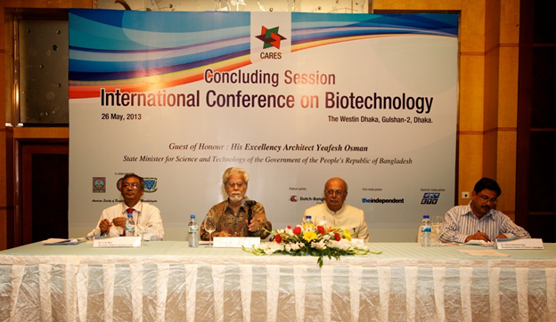The concluding session was chaired by CARES Chairman Dr. A Majeed Khan. The session was addressed by Mr. Abdul Awal Mintoo by spot invitation and by Dr. Tisssa Vitarana, Sri Lankan Minister of Scientific Affairs, with concluding address by Dr. Khan. Vote of thanks was given by the Secretary of the Organizing Committee Dr. S. K. Roy. Dr. Khan summarized the objectives of the ICB from CARES point of view: to seek the applications of Biotechnology in uplifting the quality of life of people of Bangladesh, for which science and entrepreneurship have to join hands. He commented that the kind of representation at the ICB had amply reflected the will of all those who to work together for this goal. The need of the time is investment of skills, resources and will. He emphasized on the need to set up biotechnology parks and business incubation like in India and Thailand. Minister Dr. Vitrana complemented CARES Chairman for beginning a process that he himself had been trying to achieve in Sri Lanka for some time: brining scientists, business and other stakeholders together. Mr. Abdul Awal Mintoo stated that while he was involved in biotech-based agro-industries, he wanted more focus on science education in the country for building the required human resources.
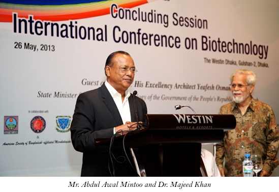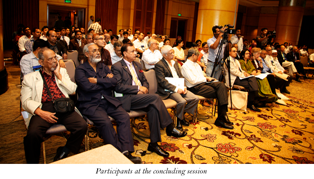
The Hon'ble State Minister of Science and Technology was scheduled to be the guest of honor in the Concluding ceremony. As he could not attend due to some unavoidable reason, he had sent the text of his address. Some of its salient points are:
- Biotechnology is a vast subject, which has potential applications in almost all areas related to our basic interactions in daily life, including food, agriculture, health care, environmental science and much more. Realizing this extensive scope and future prospects of the subject developed nations investing in large-scale financial support to biotech sectors including research institutes and universities.
- During the last 35 years a considerable progress has been made in the field of biotechnology. Many Asian countries, namely India, China, Philippines, Thailand, Pakistan, Malaysia and Vietnam have recognized the potential of these techniques in contributing towards economic growth in an environmentally safe manner. Our neighboring country, India for example has taken the advantages of this technology in a wide variety of areas, including crop management, forestry, bio-pesticides, and bio-fertilizers.
- There is growing need to develop stress tolerant crop varieties to combat climate change induced disasters like flood, drought and intrusion of salinity. Improvement of fisheries & livestock, biodiversity conservation, biological & industrial waste management, health care systems, forestry & environment sectors deserve attention. Biotechnology can play a major role to address the above issues.
- The initiatives taken by CARES like this conference would play an important role to take biotechnology in the country a step ahead by bringing the researchers, policy makers and stakeholders in a closer platform.
8. What the Conference produced for CARES and for others:
The following points emerged from the participants who spoke in the Conference:1. Biotechnology is a multidisciplinary subject of tremendous potential for the development of food, medicine and horticultural crops: fruits, orchids, flora etc.
2. Many including the Government recognized the potential of Biotechnology in contributing economic growth in an environmentally safe manner. Our neighboring countries have taken the advantages of this technology in a wide variety of areas, including crop management, forestry, bio-pesticides, bio-fertilizers and pharmaceuticals. Bangladesh needs to catch up, and not lag behind.
3. Private sector and potential entrepreneurs have important role to play. They are looking forward to scientifically trained manpower resources and appropriate technology. Professors and researchers should play important role and be involved in launching biotechnology-led companies along with businessmen and vice versa.
4. Biotechnology, an interdisciplinary science, holds enormous prospect of individual career development as well as institutional collaboration within the region and beyond.
5. Government as well as the private sectors have enormous scope and responsibilities to help develop biotechnology research and industrial entrepreneurial collaboration.
6. Dr. Muhammad Golam Morshed has shown that microbiology oriented industries: small, medium as well as large scale could be feasible in Bangladesh.
7. Some papers presented have shown that good progress has been made in the country in producing bioengineered crops tolerant to environmental stresses. What required now is large-scale commercialization.
8. Bio-medical industries have good potential in Bangladesh. Country's pharmaceutical industries are now poised to produce vaccines. Export potential should be explored.
9. The conference ended with recommendations which CARES was expecting to emerge. It supported CARES vision to promote and support basic, applied and prototype research of immediate economic value in the fields of agriculture, life sciences, small and medium agro-enterprises, green technology and rural enterprises. Participants agreed that applications of Biotechnology, if made sustainable and affordable, could very much be the key for changing livelihood of our farmers and for shaping an inclusive society in Bangladesh.
CARES may now get involved in some follow-up as suggested below:
1. Liaise with the government Ministries for providing incentives and recognition to scientists involved in biotechnology research2. Work with Bangladesh Agricultural University to establish Bio-tech Park with incubation facilities,
3. Follow-up with Governor of Bangladesh Bank to encourage the banking institutions to provide soft loan for setting up biotechnology-led industries,
CARES came out with recognition in the scientific, academic, business and governmental circles as an innovative organization dedicated to promotion of science and research for common good of people of Bangladesh. CARES has really shaken up the stakeholders with the event and need to follow up on the gains.
Annexure:
List of international participant who attend the CARES ICB
U.S.A: 1. Professor Rita ColwellProfessor Emeritus and Distinguished University Professor
University of Maryland
E-mail: rcolwell@umd.edu.
2. Dr. John Clemens
Executive Director
ICDDR, B
India:
3. Professor Asis Datta (Ph.D., D.Sc. FNA. FASc., FNASc. FTWAS)
Distinguished Emeritus Scientist
National Institute of Plant Genome Research,
E-mail: asis_datta@rediffmail.com
4. Professor S. K. Sopory
Vice Chancellor
Jawaharlal Nehru University,
New Delhi
E-mail: vc@mail.jnu.ac.in
5. Professor M. R. S. Rao
President
Jawaharlal Nehru Centre for
Advanced Scientific Research (Deemed University)
Jakkur, Bangalore
Email: mrsrao@jncasr.ac.in
6. Professor Partha P. Majumder
Director, National Institute of Biomedical Genomics, Kalyani,
E-mail: ppm1@nibmg.ac.in
7. Professor Kasturi Datta
Distinguished Biotechnology Professor,
Jawaharlal Nehru University, New Delhi
E-mail: datta_k@hotmail.com, datta.kasturi@gmail.com
Nepal:
8. Ms. Jayshree Sijapati Pandey
Senior Scientist
Nepal Academy of Science and Technology,
Kathmandu
E-mail: planningnast@mail.com.np
Sri Lanka:
9. Hon'ble Dr. Tissa Vitarana
Senior Minister for Scientific Affairs
Government of Sri Lanka,
Colombo
E-mail: scientificaffairsptv@gmail.com
10. Dr. Sirimali Fernando
Advisor to Senior Minister for Scientific Affairs
Government of Sri Lanka, and
Chairperson, National Science Foundation of Sri Lanka,
E-mail:chm@nsf.ac.lk
Non-resident Bangladeshis (NRB)
11. Professor Anwar Huq- USA12. Dr. Muhammad Zakir Hossain-Singapore
13. Professor Muhammad Golam Morshed- Canada (through Skype)
14. Dr. Nur Hasan- USA